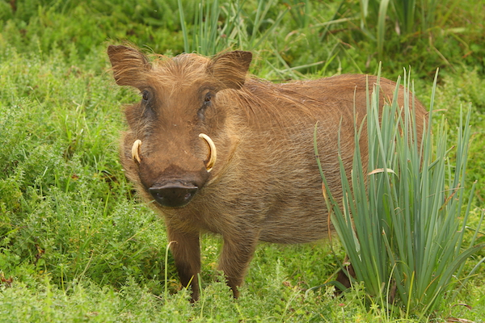

WARTHOG
Warthogs are tough, funny-looking wild pigs found across sub-Saharan Africa in savannahs and open bush. They are named for the wart-like bumps on their faces, which are actually thick pads of skin that protect their faces when they fight. They have large curved tusks that stick out from their mouths, a mane of long hair down their back, and a thin tail tipped with a tuft of hair. An adult warthog can weigh between 60 and 150kg and stand about 65cm tall at the shoulder. Despite their short legs, they can run surprisingly fast, up to 50km/h.
Warthogs have some hilarious but clever habits. When they kneel to eat grass, they actually have calloused pads on their wrists to make kneeling comfortable. They reverse into their burrows at night, so they can bolt out quickly if a predator like a lion or leopard comes sniffing. Those tusks are used for digging, defending themselves, and fighting other warthogs. They also love to wallow in mud to cool off and get rid of ticks and insects, just like domestic pigs do.
They are omnivores, grazing on grasses, roots, berries, and occasionally eating insects or carrion. They live in small family groups called sounders, usually a mother with her piglets. Piglets are super cute and follow their mother everywhere, often running with their tails straight up like antennas.
WHERE WILL YOU FIND THEM
You will find the warthogs at pen E27, next to the meerkats near the picnic area.